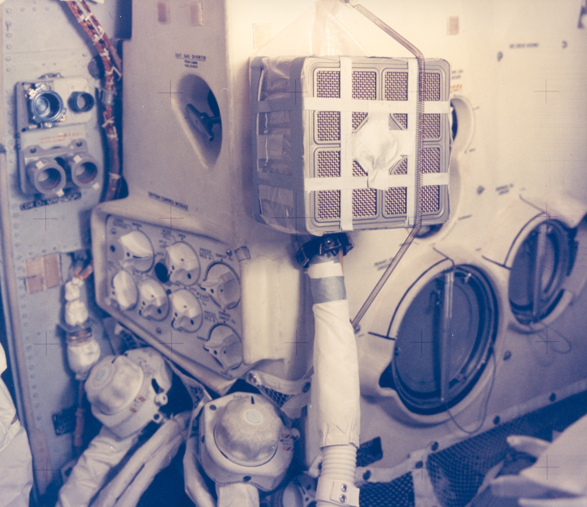

CO2 in the LM is climbing toward dangerous levels—almost at NASA's safety limit of 15 mmHg (millimeters of mercury, a pressure unit — the higher the number, the more CO2 in the cabin air)
LM's lithium hydroxide (LiOH) canisters — the chemical filters that scrub CO2 out of the air — are ROUND, sized for 2 people for 2 days
Now supporting 3 people for ~4 days—LM scrubbers running out of capacity
Command Module has extra SQUARE LiOH canisters sitting unused
Problem: Square canisters won't fit in round LM receptacles
If the tape seal leaks, the CO2 just keeps climbing
Must follow a long radioed procedure exactly, in zero gravity
Burns precious crew time and energy if it doesn't work
🤔 WHAT SHOULD THE CREW DO?
👆 Choose one of the options above 👆
NASA's Decision
✓ BUILD THE MAILBOX
Mission Control's Crew Systems team—led by engineer Ed Smylie—designed an adapter using only items they knew were aboard the spacecraft, then built and tested a copy on the ground. CAPCOM Joe Kerwin read the assembly steps up to the crew, and Jack Swigert and Jim Lovell built it in about an hour.
The Build:
Square CM lithium hydroxide canisters (the actual CO2 scrubbers)
Plastic bags (to create air channels)
Cardboard from flight manual covers (structural support)
Duct tape (LOTS of it—to seal everything)
A spacesuit hose (to pull cabin air through the canister)
Working inside the pressurized cabin, the crew taped it together, hooked up the hose, switched on the fan... and watched the gauge.

The finished "mailbox": duct tape, plastic bags, cardboard, and a spare hose
Result: SUCCESS!
CO2 fell from 14.9 mmHg to about 0.2 mmHg within an hour
—and it stayed below 2 mmHg for the rest of the trip home. The crew could breathe easy again.
"Well, I suggest you gentlemen invent a way to put a square peg in a round hole. Rapidly."
— Ed Harris as Gene Kranz in the movie "Apollo 13" (1995). In the film, the square-peg demonstration itself is done by a NASA engineer character based on Ed Smylie—the real engineer whose team designed the mailbox.
Why it worked: The ground team designed with only what the crew actually had, tested it before asking the crew to try it, and read up instructions clear enough to follow while cold and exhausted. Duct tape really can fix almost anything—even in space.
This moment became iconic: engineers on Earth and astronauts in space solving an impossible problem together with everyday materials. It's the spirit of Apollo 13.
📚 Sources for Skeptics
Duct tape and cardboard really did save three lives—but don't just take our word for it. Checking the record is exactly how engineers think. Here's the real mission data:
Apollo 13 Flight Journal — every radio call between the crew and Houston, including Joe Kerwin reading up the mailbox build steps
Apollo 13 in Real Time — replay the whole mission with real Mission Control audio, synced to the second
Apollo 13 Mission Report (PDF) — NASA's official engineering report, with the actual CO2 readings before and after the mailbox